← 返回阅读库 · 原论文目录
论文讲解阅读文档 · 多模态语言模型 · v030
TAN Temporal Alignment Networks for Long-term Video[2204.02968]
视频时长 00:16:19；讲解文字 6,880 字符；提取讲解画面 26 张。按视频原顺序阅读，每段文字保留时间戳。
文字来自整段视频的自动语音转写，按自然停顿分段，并与 PPT / 论文页面 / 演示画面对齐。未将讲解压缩为摘要；术语、数字和口述公式请结合画面及原论文核对。 阅读稿已校正规范部分明确术语误识别；原始逐字稿和每处修改记录另行保留。
讲解画面为源视频截图（640×360），不是可编辑 PPT 文件。全片按每秒 2 帧扫描内容变化，逐步展开页保留；连续动画保留代表画面。清晰度受源视频限制。
下载完整资料包 · 含离线 HTML、PDF、Word、全部 PPT 画面和字幕。
原论文与材料
Temporal Alignment Networks for Long-term Video · 下载完整 PDF（16 页）
按时间阅读
00:00:00–00:00:09 · 画面 001
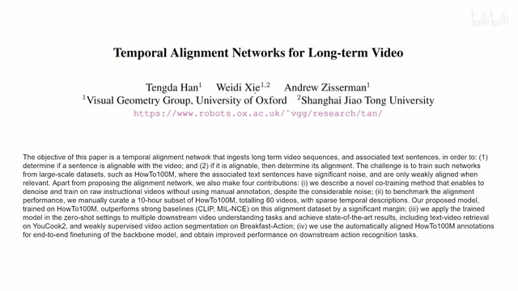
00:00:00–00:00:09 · 画面 001大家好,今天我们来介绍一篇论文 Temporal Alignment Networks for Long-Term Video 这篇论文的第二作者是谢伟迪博士这个是他的 B 站账号他最近加入了上海京生大学
00:00:09–00:00:36 · 画面 002
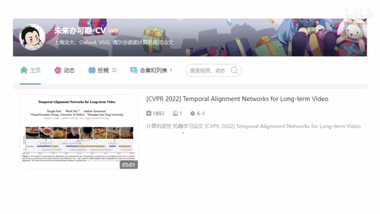
00:00:09–00:00:36 · 画面 002那么在观看这个视频之前呢也非常推荐你到他的账号下面去看一下原版的这个 CVPR 的这个 Oral 的视频是什么样的然后为了理解这个视频呢我还推荐你先去把这个 InfoNCE 然后我们上一篇讲了这个 MIL-NCE 这些东西熟悉一下然后呢再看我们这个视频会变得非常方便那我们直接开始这份论文研究的是我们现在有一个长视频然后呢这个视频里面有对应的字幕
00:00:36–00:01:08 · 画面 003
00:00:36–00:01:08 · 画面 003那么对于其中的每一个字幕，我想判断两个事，就是第一它能不能和当前的这个视频的内容对应，其次就是我给一个文字和一个视频，那么它俩究竟对应了没有。那么这些任务呢，都要求我们学到一个好的这个 Visual 加 Textual 的这个 Joint Representation，这样子呢来方便我们判断它们的这个对应的关系。那比如说这里是这个戈登拉姆齐的一个教学视频啊。
00:01:08–00:01:09 · 画面 004
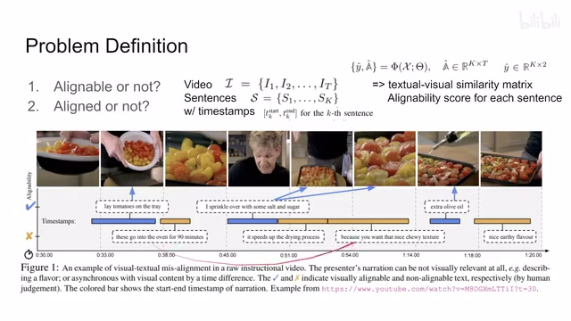
00:01:08–00:01:09 · 画面 00400:01:09–00:03:05 · 画面 005
00:01:09–00:03:05 · 画面 005比如说这个地方把各种番茄放在托盘上，这个描述呢正好是画面中显示的内容，没问题。但是下面这句话放到这个烤炉里放 90 分钟，那这句话呢你没法在视频的内容中找到对应，所以这句话呢是不能堆砌的。那再往下，下一句撒一些盐和糖和它正好对应的这个视频针呢并不是它说的这个内容，而它后面说的这个撒盐糖的这个过程呢在后面的几针出现了。所以你看到这句话它虽然是可以对齐呢，但是它并没有完美的对齐。然后呢后面说这个描述，比如增加的这个风干的过程啊，想要这种有嚼劲的口感等等这些内容呢也没法在视频中反映出来，所以它们是不能对齐的。
那最后这里有给橄榄油，这是对齐的，但是形容它的这个风味的时候又不能对齐了。这是一个很好的视频的例子，这样你就理解我们究竟在处理什么样的数据，我们达到的目的是什么。那在这样的问题的基础上呢，我们把它们落到这个符号的描述。那对于一个长视频来说，它可以被切成一个个小的这个片段，那么对应的这个视频呢，它里面有一句句的话，然后呢每一句话呢。
它都有一个开始和结束的这个时间。那么我们想要的任务呢，就是我们的这个模型拿上我们的这个视频，拿上这些画，它生成两个东西，一个是这个 textual visual similarity matrix，也就是说我这个 video 是一个维度，我的这个句子是另一个维度，它们的一个相似性矩阵就是描述了它们的这个对应的关系。然后另一个呢是这个 white hat，它呢就是。
我们的这个对齐的这个分数也就是说我当前的句子能不能对齐到这个视频里面因为它是一个二分类的问题嘛所以它的输出就是 k by 2 的这么一个矩阵这个是我们问题的一个定义那么下面呢我们就来看这个模型那这个模型呢跟我们之前介绍的 MIL-NCE 它是很相近的都是说我们先用一个陪顺好的这些视觉的模型把 video 的 feature 提出来
00:03:05–00:04:33 · 画面 006
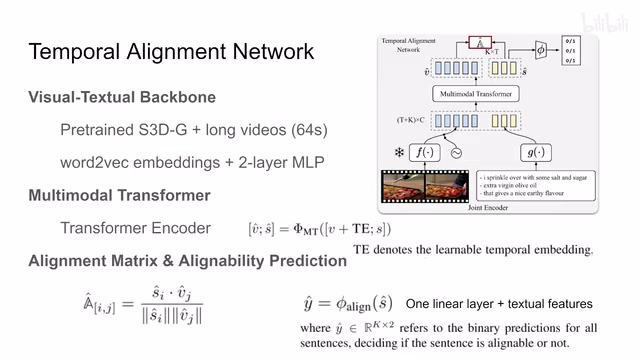
00:03:05–00:04:33 · 画面 006用培训好的这个文字的模型把这个各个句子的 feature 提出来。这个是视频的这个 feature，这个是文字的 feature。然后呢，这里作者用了一个 multimodal transformer，他把我们视频的这些 token 和文字的这些 token 一起串接起来，共同的做一个这个 crossattention。那在这个过程中呢，他们就交换信息嘛。那所以你看到这里是这样一个描述，这个分号表示串接嘛。
然后 te 呢是我们针对这个视频加了这个 positional embedding 那那么然后我们就过 transformer 吗 transformer 之后我们的 token 还是这些 token 但是呢我们认为每一个 token 就代表了这个当前的视频的片段也好或者说这句话也好它的一个 feature 那么你拿任何一个文本的 feature 和任何一个视频的 feature 它们在一起呢就可以计算一个相似度那么我们认为这个相似度呢就是这个文本和这个视频它们对齐的程度那么同样的呢，你把这个文本的各个句子的这个 feature 放到一个 linear layer 里面，用它来预测说这个句子是否可以和当前的视频对齐，这是一个简单的这个二分类问题了。那么这个呢就是一个非常简单的作者这里叫 temporal alignment network 它的一个网络的结构。
00:04:33–00:05:00 · 画面 007
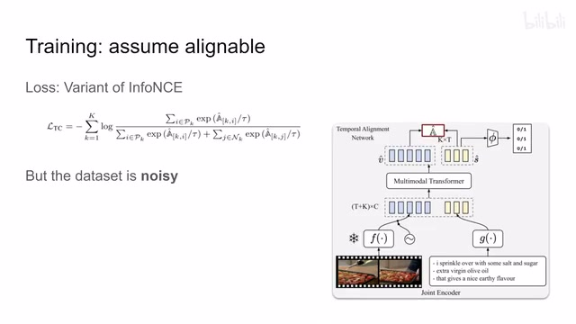
00:04:33–00:05:00 · 画面 007那么下面我们就可以训练这个网络了对不对？这里呢，作者使用的 loss 呢，还是这个 info nce 跟这个 ml nce 一样的，就是分子上放上那些你认为是对齐的这些样本，你希望他们的这个 similarity 这个 score 相对的高一些，分母上这里就放上一些这个 negative sample，然后这个套是 temperature 嘛，这些都是很常规的这个 info nce 的操作了。
那么在理想情况下，你就按照这个 loss 直接去嘛，就能得到一个好的模型了。但是呢，实际上正如我们之前在 MILNCE 里面说的，这个数据集呢 How to 100M。
00:05:00–00:05:01 · 画面 008
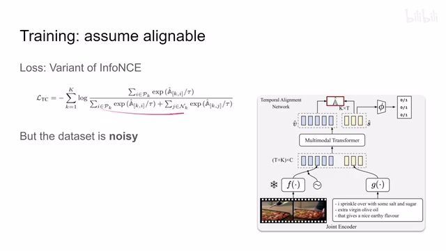
00:05:00–00:05:01 · 画面 00800:05:01–00:05:39 · 画面 009
00:05:01–00:05:39 · 画面 009这个 YouTube 这个数据集呢，它呢是非常 noisy 的，也就是说我们的视频和文本的对应并不是那么好，因为很多的时候你就想视频的剪辑嘛，对吧？有时候你在背景上在说一件事情，实际上它是展示另一个画面，这是很常见的事情。那么本文的重点呢，其实也就在于怎么样在这个数据集有很大的这个干扰的情况下，我们依然把这个好的这个 representation 给它学出来。
00:05:39–00:06:42 · 画面 010
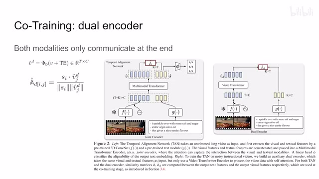
00:05:39–00:06:42 · 画面 010那么下面呢我们来看作者怎么样应对这个数据集很 noisy 的这个问题那这里呢作者首先引入了另一个 encoder 它叫做 dualencoder 那么它跟左边的 jointencoder 其实非常像也是用了一样的这个 feature 的提取对吧把它们变成 token 但是呢在这里我们只把视频的 token 放到这个 vision transformer 里面然后做一些变换嘛拿到这个 visual token 之后呢和这个 textual token 一起他们再算另一个这个 alignment score 这里就是 AD hat
所以这个模型的重点在于我的这个。视觉信号和文本信号，它们只在网络的最后有一个信息的交互，而对于我们之前介绍的 TAN，它中间是用一个 Transformer 就直接把两个 Token 的信息开始交互起来了。这个是首先我们加入了一个 Dual Encoder，那么作者在这里的设想就是因为它们的信息只在最后的一层来交互，所以如果这个视频和文本它们没有对齐的话，这个模型这个 Dual Encoder 应该是更敏感的。
这是作者的一个设想那么下面我们就来看有了这个多用 code 之后我们开始怎么训练这个系统这里作者把这个过程叫做 co-training 首先因为我们知道我们的这个数据级的模型它的这个标注的质量是非常不好的就是文本和视频的对应是非常不好的因此我们希望在训练这个模型的过程中用我们模型的知识去更新一下这个视频和文本的对应关系
00:06:42–00:08:42 · 画面 011
00:06:42–00:08:42 · 画面 011具体来说就是这里，我们首先用 Joint Encoder 和 Dual Encoder 去判断一下当前的视频和文本它们的对应的关系，算出来这两个 Similarity。那当然这个分数也不要直接用啊，这里作者加了一个 temporal window smoothing，就是因为一般这个句子它会持续很长时间嘛，然后这个很长时间就会对应很多个这个 video clips，那么这个 smoothing 就是说在我一句话对应的所有的这个 video clips 里面，我把它的这个分数给它求平均来作为我们这句话和这个文本的这个对应的关系，那具体的你可以看这个图啊。
那横轴是这个时间轴嘛，每一个小的方块就是一个 video clips，每行呢就是一句话，然后呢你发现我们这个 10 这个 joint encoder 他呢认为说第一句话 ok 和前面的这个相关性比较高，逐渐到后面这个相关性比较低对吧，然后第二句话呢相关性相整个都比较低，那第三句话对吧这里比较高，其他位置比较低等等。这个其实就是 A hat 这个一个可视化，那么同样的对于我们的这个 dual encoder 来说呢，这个是 A hat d 它的这个可视化，那么拿到这两个 score 之后呢，我们就要结合它们的智慧来一起来判断我们当前的这个 label 它的质量，那具体来说呢，就是我们现在每一句话都能够根据我们两个模型的输出找到它在这个视频中对应的这个位置，那么现在呢，我们让这两个模型它们合计一下。
看看这两个模型针对一句话判断的相似之处。这里作者用了 IOU，因为我们每一句话它都是持续一段时间，那么第一个模型在时间轴上给这句话找到了一个位置，第二个模型在时间轴上给这句话找到了一个位置。
00:08:42–00:10:13 · 画面 012
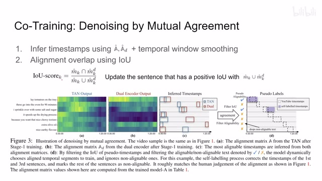
00:08:42–00:10:13 · 画面 012那么这两个结果算一下 IOU,如果它的这个 IOU 大于 0 的话,就说明它们这两个模型的预测结果有交叠,有交叠就意味着我们的两个模型都一起的认为说这句话应该对应视频中的这个位置。那么在这种场合呢,我们就要更新一下我们视频的这个 label,那具体来说就是我们取两个模型预测结果的这样一个并集,用它来替换到原始的这个虚线框里面的这个 label。
因为原始的字幕它就是在这个范围内，那么当然像第二个句子它这个对应关系就没有两个模型各执一词对吧？它们没有一个共识。那么在这种情况下，我们就继续使用原来我们数据集中给我们的 label。那么像这个例子对吧，也是它们两个有共识，我们取下它的并，取完它的并之后就作为新的 label，而不是我们原来的数据集里面的 label 是这个样子。
那么在那么在更新完了这个 label 之后呢我们就可以继续用这个新的 label 来训练这个 Lemon Score 这样子不断的这个迭代不断的这个 bootstrapping 使我们的这个对这个 Lemon Score 这个预测能够持续的改善这个就是使用 mutual agreement 来帮助我们清理这个数据集，让这个 alignment score 能够很好的训练。那么当然我们别忘了还有一个任务，就是我们是要通过这个 textual 这些文本的 token 去预测说这个文本能否和当前的视频对应。那对于这个任务来说，因为所有的文本都出现在视频里面，我们没有办法从原来的这个数据集中拿到任何有用的 label。那怎么办呢？这个时候我们就要自己来创造这个 label 了。
00:10:13–00:12:13 · 画面 013
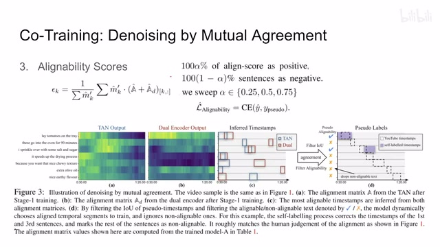
00:10:13–00:12:13 · 画面 013这里我们看到作者计算了一个 alignability score。你看这个式子很复杂，其实它就是我们根据当前的 label 这个 label 告诉我们每一句话对应在视频中出现在什么位置。对于每一句话来说，我只统计这句话在视频中出现的这个区段，这个区段里面它所有的 alignment score。那对于这一项呢就是这个 tan 它的输出那对于这一项呢就是我们的这个 dual encoder 这一块它的输出然后这一块分数的和呢作为我们的这个 alignability score 就是这个 ypsum kk 就是对应了我们的每一句话嘛那么当然这个 label 也是我们刚刚更新过的也就是如果我们的两个模型达成共识我们就用更新过的这个 label 那如果这两个模型没有达成共识我们还是沿用
这个原来数据集中的这个 label。那么这样之后呢，我们对视频中的每一句话啊，我都得有一个这个 epsilon 这个 k 完事呢，我们就可以对所有的这个 epsilon 进行排序。那这里呢，作者说我前 100%alpha 的就是对于那些有比较高的 epsilon 值的这些句子呢，我们认为它是 positive。那么这些句子中末尾的啊，这个 epsilon 值最低的这一批啊，他们呢作为 negative sample。
那这里呢作者还测试了很多种这个 alpha 所谓 hyperparameter 它的取值嘛那么有了 positive sample 和 negative sample 我们直接因为是二分类问题嘛做一个 binary cross entropy 就可以预测说我当前这句话跟我的视频是否是对应的那么这个呢就是我们怎么样产生这个 alignability 它的这个 label 那么以上呢我们就把这个 co-training 就是模型训练的整个过程就过了一遍了
00:12:13–00:12:17 · 画面 014
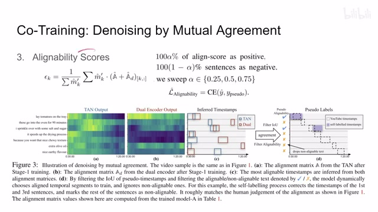
00:12:13–00:12:17 · 画面 014那么下面我们来看具体的作者是怎么样训练的。那这里呢，作者把训练呢分为了两个阶段。那第一个阶段里呢，我们就原封不动的用原始的这个很 noisy 的这个数据集这个 label 只训练这个 influency loss。
00:12:17–00:12:32 · 画面 015
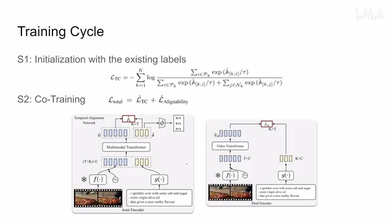
00:12:17–00:12:32 · 画面 015用 loss 把 joint encoder 和 dual encoder 都训练起来然后我们就开始做 co-training 就是我们刚刚介绍的根据我们模型的输出来去更新我们的 label 然后用更新过的 label 重新去做 InfoNCE 同时根据我们更新过的 label 来生成 alignability score 然后用它来训练这一块这个是作者的 co-training 过程
00:12:32–00:12:33 · 画面 016
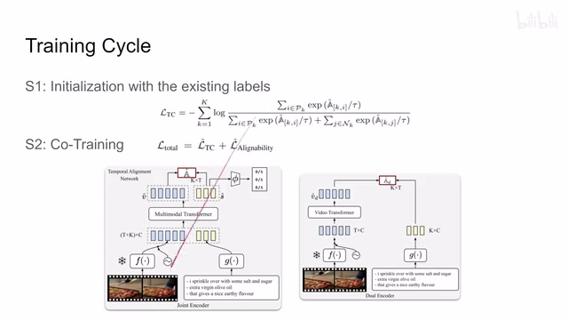
00:12:32–00:12:33 · 画面 01600:12:33–00:12:57 · 画面 017
00:12:33–00:12:57 · 画面 01700:12:57–00:13:01 · 画面 018
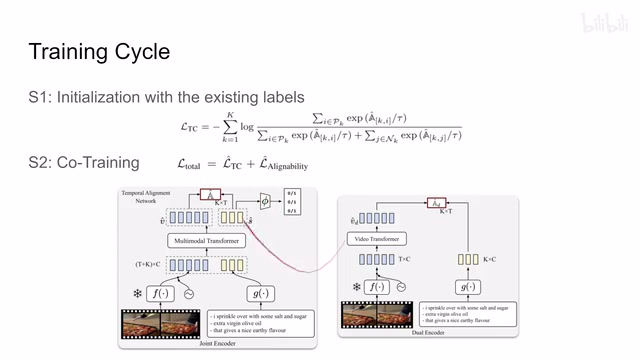
00:12:57–00:13:01 · 画面 018那么当然在实际训练过程中作者为了稳定这个训练的过程还使用了这个 exponential moving average 也就是这两个网络的 EMA 或者你叫 momentum network 这个在 BYOL 里面还有包括各种 reinforcement learning 里面很常见的就是我用这个 momentum network 去生成我们的 label
00:13:01–00:13:21 · 画面 019
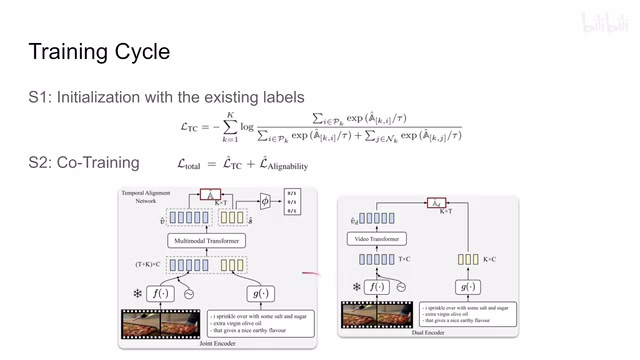
00:13:01–00:13:21 · 画面 019然后呢，用生成的 label 去训练我们这个 online network。然后训练好了这个 online network 之后呢，我们再按照一定的比例把新的参数给它更新到这个 EMA network 里面。那这个是在做这种 bootstrapping 类似的训练的时候呢，很常见的一个策略。
00:13:21–00:13:30 · 画面 020
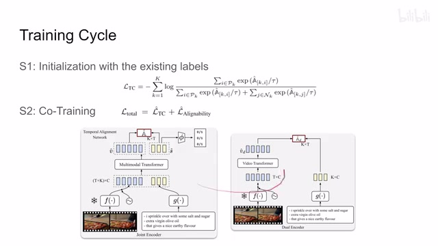
00:13:21–00:13:30 · 画面 02000:13:30–00:13:35 · 画面 021
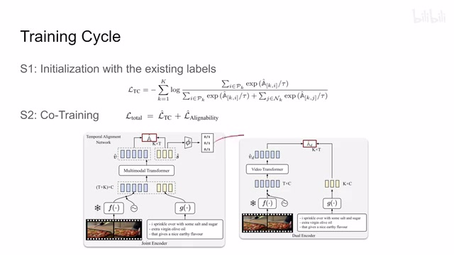
00:13:30–00:13:35 · 画面 021好的，那么以上就是本文主要的技术细节啊。那其实它的重点就是我们怎么样使用这两个网络还有他们的 emv 去更新我们的 label，让我们的 label 逐渐的提高它的质量，然后最终实现这个口吹孕的过程。那么下面我们来看作者汇报的一些结果。
00:13:35–00:13:36 · 画面 022
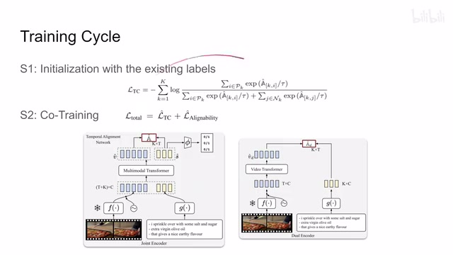
00:13:35–00:13:36 · 画面 02200:13:36–00:13:51 · 画面 023
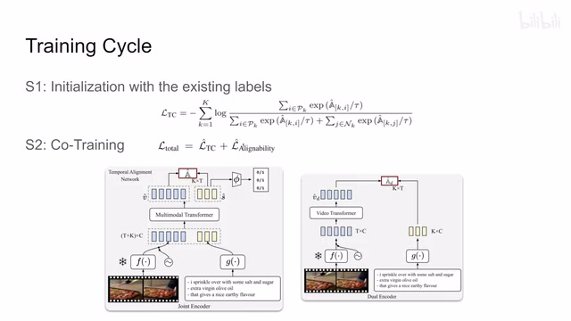
00:13:36–00:13:51 · 画面 02300:13:51–00:15:28 · 画面 024
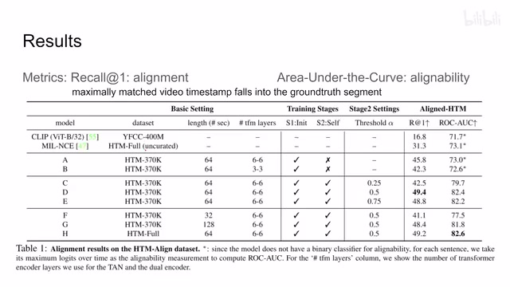
00:13:51–00:15:28 · 画面 024那首先对于这个 video text element 这种任务呢，我们呢就用这个 retrieval，给定一个 text，然后告诉我们这个 text 在这个 video 中的具体哪一个位置。如果我们的模型的输出在我们的光数字里面，说明我们成功的找到了这个呢。作者叫这个 recall。那这个时候有朋友说了，你这个数据集不是本来就是 noisy 的吗？对吧？那你为什么还可以用它来做光数字呢？
这里呢，作者的测试集呢是手工重新标记了的，所以它的这个质量是可以得到保证的。那么这个呢，其实是关于这个 Alignment Matrix，也就是我们出来的那个视频和文本对应的矩阵它的一个评估。那么对于还有一个任务，就是这个文本究竟能不能和这个视频匹配这个 Classification 这个问题呢，作者呢汇报了这个 AUC，也就是 Area Under the Curve，因为你的这个网络无非就是给出一个得分嘛。
那具体我的这个预值超过多少的得分算是 positive，超过多少得分算是 negative，它是浮动的。所以为了全面的评估呢，我们汇报这个 AUC。这个也是常见的指标了。这里作者对比了不同的这个配置和我们的之前的这些方法它们的一个性能的参考。你可以看到呢，这里作者探讨了不同的这个 transformer layers，然后不同的训练的阶段，我们之前说的这个 alpha 它的这个取值的选择。
然后还有就是我整个视频长度它的影响。那么感兴趣的朋友非常推荐你到原文的实验中查看来对照。那么当然还有很多下游任务。
00:15:28–00:16:19 · 画面 025
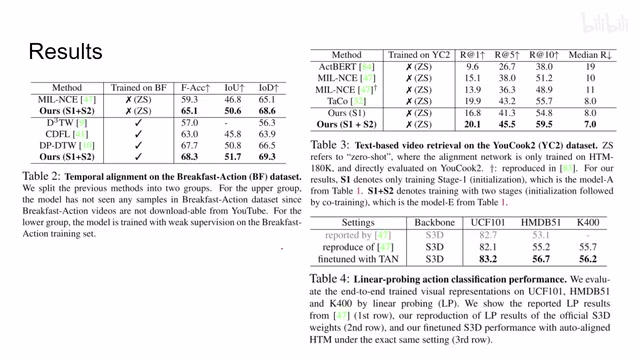
00:15:28–00:16:19 · 画面 025包括在不同的数据集上，然后呢做这个 video retrieval 等等等等。那还是感兴趣的朋友呢，非常推荐你到原文查看。那么总的来说呢，这篇文章相对于前作这个 MIL-NCE 它的贡献呢，一是在于我们用了 crossattention 把我们的这个 video 和这个 text 他们的 representation 结合起来了。
这个是这个 tan 就是 joint encoder 它的这个内容。那第二个呢，就是用了这个 dual encoder。在这个 dual encoder 的帮助下呢，我们实现了对这个 label 的自己的一个清理，自己的一个更新，可以不断的去改善我们自己的这个性能。那它就比这个 MIL-NCE 里面我默认使用时间来限制 positive 这个方法要更加的合理一些。那么以上呢，就是我对这篇论文的一个快速的整理，欢迎各位报考上海交通大学，再见。
00:16:19–00:16:19 · 画面 026
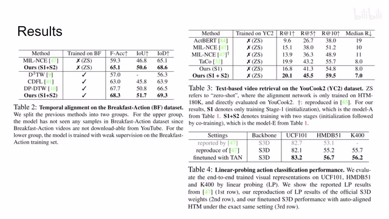
00:16:19–00:16:19 · 画面 026转写与来源说明 · 0 个自动复核提示
保留 42 个原始语音片段，0 个片段触发自动复核提示。提示仅用于定位可能的术语、重复或识别问题，不等于已确认错误。
讲解画面为源视频截图（640×360），不是可编辑 PPT 文件。全片按每秒 2 帧扫描内容变化，逐步展开页保留；连续动画保留代表画面。清晰度受源视频限制。
原视频：paper/合集_2026-10-16_多模态语言模型/[论文简析]TAN Temporal Alignment Networks for Long-term Video[2204.02968].mp4
SHA-256：7bad5325ad78d0ba6aa502eb75b7749fc7b362a866c6c24b2b0b6b5e34972eb0
全文按视频语音与画面制作。原论文可从上方链接下载；完整资料包保留全文、原始逐字稿、字幕和校对记录。